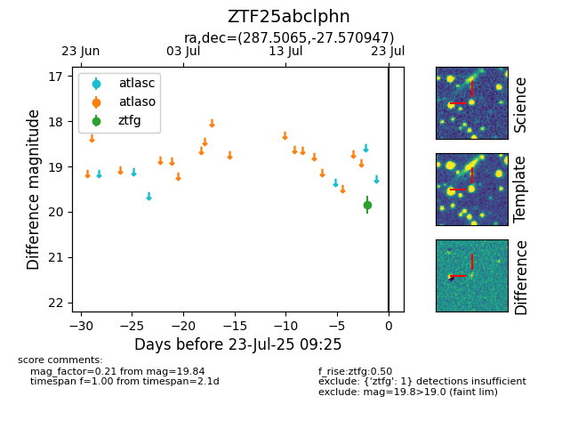

Target ZTF25abclphn at 2025-07-23 11:48, see:
FINK: fink-portal.org/ZTF25abclphn
Lasair: lasair-ztf.lsst.ac.uk/objects/ZTF25abclphn
ALeRCE: alerce.online/object/ZTF25abclphn
alt names
ZTF25abclphn (ztf,fink)
coordinates:
equatorial (ra, dec) = (287.5065,-27.57095)
galactic (l, b) = (9.7045,-15.96005)
photometry
last ztfg=19.84
1 ztfg detections
